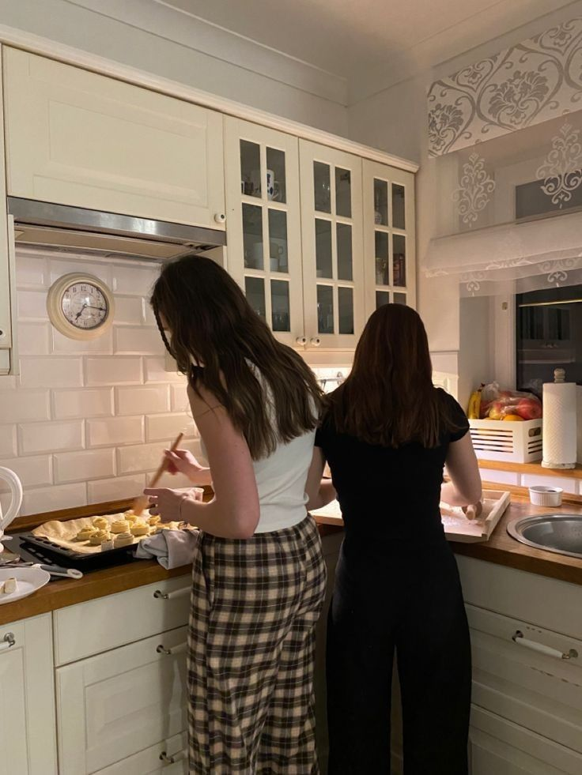
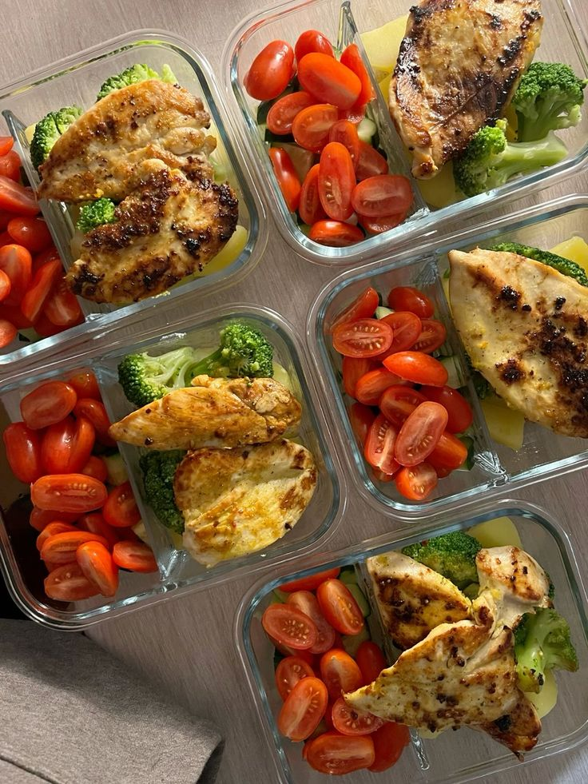
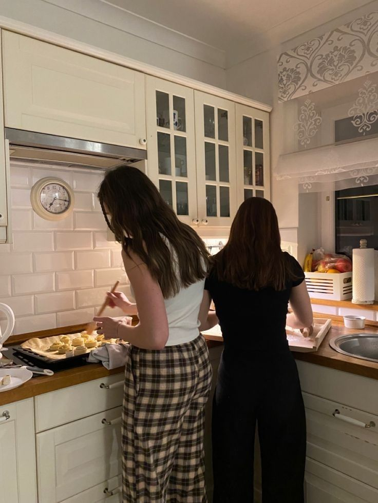
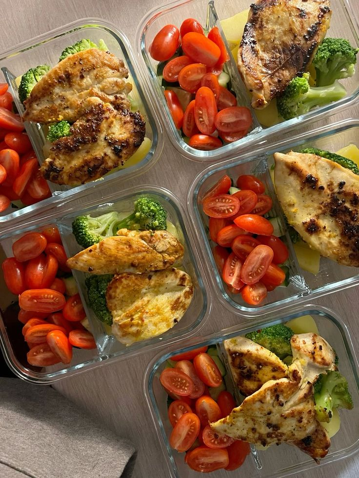

Somos dos hermanas Martina y Catalina, que decidimos transformar un problema en una solución: nos encanta comer rico y saludable, pero el ritmo del trabajo y la facultad nos dejaba sin tiempo para cocinar. Así nació este emprendimiento, con la idea de ofrecer viandas caseras, equilibradas y listas para disfrutar, pensadas para quienes quieren cuidarse sin complicarse.
 


